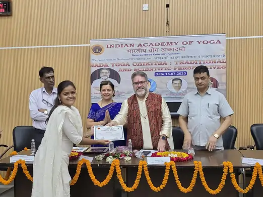

<script type="application/ld+json">
{
  "@context": "https://schema.org",
  "@graph": [
    {
      "@type": "Organization",
      "@id": "https://onlineyogaclass.in/#organization",
      "name": "Shringarika Mishra - Clinical Yoga",
      "url": "https://onlineyogaclass.in",
      "logo": "https://onlineyogaclass.in/images/logo.webp"
    },
    {
      "@type": "Person",
      "@id": "https://onlineyogaclass.in/#shringarika",
      "name": "Shringarika Mishra",
      "jobTitle": "Clinical Yoga Specialist & Research Scholar",
      "image": "https://onlineyogaclass.in/images/shringarika.webp",
      "sameAs": [
        "https://scholar.google.com/citations?user=FAp2CnkAAAAJ",
        "https://www.researchgate.net/profile/Shringarika-Mishra",
        "https://in.linkedin.com/in/shringarika-mishra-400607224"
      ]
    },
    {
      "@type": "BlogPosting",
      "@id": "https://onlineyogaclass.in/blogs/understanding-the-8-limbs-of-yoga-beyond-the-physical-postures.html#article",
      "isPartOf": {
        "@id": "https://onlineyogaclass.in/blogs/understanding-the-8-limbs-of-yoga-beyond-the-physical-postures.html"
      },
      "headline": "Understanding the 8 Limbs of Yoga: Beyond the Physical Postures",
      "description": "Modern yoga is often synonymous with \"Asana\" or physical stretching, but clinical health requires a deeper integration. The 8 Limbs of Yoga, as outlined in Patanjali’s Yoga Sutras, provide a comprehensive roadmap for psychological resilience, hormonal balance, and nervous system regulation.",
      "image": "https://onlineyogaclass.in/images/stress.webp",
      "datePublished": "2025-12-05",
      "dateModified": "2025-12-05",
      "author": {
        "@id": "https://onlineyogaclass.in/#shringarika"
      },
      "publisher": {
        "@id": "https://onlineyogaclass.in/#organization"
      },
      "mainEntityOfPage": "https://onlineyogaclass.in/blogs/understanding-the-8-limbs-of-yoga-beyond-the-physical-postures.html"
    },
    {
      "@type": "BreadcrumbList",
      "@id": "https://onlineyogaclass.in/blogs/understanding-the-8-limbs-of-yoga-beyond-the-physical-postures.html#breadcrumb",
      "itemListElement": [
        {
          "@type": "ListItem",
          "position": 1,
          "name": "Home",
          "item": "https://onlineyogaclass.in/"
        },
        {
          "@type": "ListItem",
          "position": 2,
          "name": "Clinical Blogs",
          "item": "https://onlineyogaclass.in/blogs.html"
        },
        {
          "@type": "ListItem",
          "position": 3,
          "name": "Understanding the 8 Limbs of Yoga: Beyond the Physical Postures",
          "item": "https://onlineyogaclass.in/blogs/understanding-the-8-limbs-of-yoga-beyond-the-physical-postures.html"
        }
      ]
    }
  ]
}
</script>

<main class="relative z-10 max-w-5xl mx-auto px-4 sm:px-6 lg:px-8 pt-32 pb-24">
    <div class="mb-10 max-w-3xl mx-auto rounded-[2.5rem] overflow-hidden bg-slate-50 border border-pink-50 shadow-md">
        
    </div>

    <div class="article-card bg-white border border-gray-100 rounded-[2.5rem] p-8 md:p-12 shadow-sm transition">
        <script type="application/ld+json">
        {
          "@context": "https://schema.org",
          "@type": "BlogPosting",
          "headline": "Understanding the 8 Limbs of Yoga: Beyond the Physical Postures",
          "description": "Modern yoga is often synonymous with \"Asana\" or physical stretching, but clinical health requires a deeper integration. The 8 Limbs of Yoga, as outlined in Patanjali’s Yoga Sutras, provide a comprehensive roadmap for psychological resilience, hormonal balance, and nervous system regulation.",
          "keywords": "Clinical Yoga Varanasi, BHU Yoga Specialist, 8 limbs of yoga simplified, patanjali yoga sutras clinical health, what are the eight limbs of yoga, yoga for nervous system regulation, yoga for stress management, Shringarika Mishra research",
          "author": {
            "@type": "Person",
            "name": "Shringarika Mishra"
          },
          "publisher": {
            "@type": "Organization",
            "name": "onlineyogaclass.in",
            "logo": {
              "@type": "ImageObject",
              "url": "https://onlineyogaclass.in/images/logo.webp"
            }
          }
        }
        </script>

        <span class="text-pink-600 font-bold text-xs uppercase tracking-widest">Philosophy &amp; Clinical Wellness</span>
        
        <h2 class="text-3xl md:text-4xl font-bold mt-6 mb-6 text-transparent bg-clip-text bg-gradient-to-r from-pink-600 via-purple-600 to-pink-700">Understanding the 8 Limbs of Yoga: Beyond the Physical Postures</h2>
        
        <div class="flex flex-col md:flex-row gap-8 mb-8">
            <div class="md:w-1/3">
                
            </div>
            <div class="md:w-2/3">
                <p class="text-gray-600 text-lg leading-relaxed">
                    Many people today believe that yoga is simply about twisty physical exercises, bending your back, or sweating on a plastic mat. When you open a typical social media app, you only see people doing complex body poses called Asanas. However, if you are looking to fix real health problems like high stress, stubborn hormone imbalances, or an overactive mind, physical bending alone is not enough. True clinical health requires a much deeper, more complete approach.
                </p>
                <p class="text-gray-600 text-lg leading-relaxed mt-4">
                    During my clinical research work at Banaras Hindu University (BHU), I spent years studying how the human brain and internal glands respond to ancient wellness systems. Long ago, a wise sage named Patanjali wrote down a master guide called the Yoga Sutras. He explained that yoga is actually made up of eight distinct parts, which we call the 8 Limbs of Yoga (Ashtanga Yoga). These eight blocks work together like a roadmap to reset your biology. This article will explain what these eight stages mean in plain, very simple English, show how they protect your nervous system, and give you a clear daily guide to bring your mind and body back into balance.
                </p>
            </div>
        </div>
        
        <div class="full-content text-gray-700 space-y-8 leading-relaxed border-t border-gray-50 pt-8">
            
            <section>
                <h3 class="text-2xl font-bold text-gray-900 mb-3">Deconstructing the Blueprint: The 8 Limbs of Yoga Explained</h3>
                <p>
                    To understand how yoga heals your internal chemistry, we must look at how these eight limbs are structured. They are not random rules. They are arranged in a scientific order, leading your energy smoothly from external relationships down into your deep cellular networks.
                </p>
                <table class="w-full border-collapse my-6 text-sm text-left shadow-sm rounded-xl overflow-hidden border border-gray-100">
                    <thead>
                        <tr class="bg-pink-600 text-white font-bold">
                            <th class="p-4">Limb Name</th>
                            <th class="p-4">Simple Meaning</th>
                            <th class="p-4">The Clinical Health Benefit</th>
                        </tr>
                    </thead>
                    <tbody class="divide-y divide-gray-100 bg-white">
                        <tr>
                            <td class="p-4 font-bold text-gray-900">1. Yama</td>
                            <td class="p-4 text-gray-600">Social ethics and how you behave toward the people around you.</td>
                            <td class="p-4 text-gray-600">Lowers relationship friction, preventing sudden spikes in stress chemicals.</td>
                        </tr>
                        <tr>
                            <td class="p-4 font-bold text-gray-900">2. Niyama</td>
                            <td class="p-4 text-gray-600">Personal discipline, cleanliness, and daily self-care habits.</td>
                            <td class="p-4 text-gray-600">Builds deep mental peace and consistency, which stabilizes your baseline energy.</td>
                        </tr>
                        <tr>
                            <td class="p-4 font-bold text-gray-900">3. Asana</td>
                            <td class="p-4 text-gray-600">Comfortable physical postures and soft structural stretches.</td>
                            <td class="p-4 text-gray-600">Improves pelvic blood flow and keeps internal tissues flexible and highly oxygenated.</td>
                        </tr>
                        <tr>
                            <td class="p-4 font-bold text-gray-900">4. Pranayama</td>
                            <td class="p-4 text-gray-600">Controlled, deliberate breathing exercises and lifestyle breathwork.</td>
                            <td class="p-4 text-gray-600">Directly stimulates the vagus nerve to slow down an overactive, racing heart.</td>
                        </tr>
                        <tr>
                            <td class="p-4 font-bold text-gray-900">5. Pratyahara</td>
                            <td class="p-4 text-gray-600">Turning your senses inward and shutting out external noises.</td>
                            <td class="p-4 text-gray-600">Protects your brain from sensory overload and calms down hyper-alert nerves.</td>
                        </tr>
                        <tr>
                            <td class="p-4 font-bold text-gray-900">6. Dharana</td>
                            <td class="p-4 text-gray-600">Single-pointed focus on one object, breath, or target.</td>
                            <td class="p-4 text-gray-600">Reduces mental scatter and stops your mind from constantly worrying about the future.</td>
                        </tr>
                        <tr>
                            <td class="p-4 font-bold text-gray-900">7. Dhyana</td>
                            <td class="p-4 text-gray-600">Continuous, uninterrupted meditation or a smooth flow of awareness.</td>
                            <td class="p-4 text-gray-600">Heals deep-seated anxiety loops and supports deep emotional recovery.</td>
                        </tr>
                        <tr class="bg-pink-50/50">
                            <td class="p-4 font-bold text-pink-700">8. Samadhi</td>
                            <td class="p-4 text-pink-900 font-medium">Complete integration, absolute balance, and inner liberation.</td>
                            <td class="p-4 text-pink-900">Brings your entire mind, hormone system, and immune pathways into perfect harmony.</td>
                        </tr>
                    </tbody>
                </table>
                <p>
                    When modern fitness classes only highlight the third limb (Asana), they leave out the most powerful healing parts of the system. Think of the 8 Limbs like a tree: the Yamas and Niyamas are the strong roots buried in the soil, Asana and Pranayama are the trunk and branches, while the quiet internal states like Dhyana and Samadhi are the sweet flowers and fruits. By using all eight parts together, you ensure that your yoga practice is not just a hard physical workout, but a deep biological restoration.
                </p>
            </section>

            <section>
                <h3 class="text-2xl font-bold text-gray-900 mb-3">Understanding the Ethical Foundation: Yama and Niyama</h3>
                <p>
                    Most health problems start because our bodies are living under constant, unseen stress. The first two limbs, the Yamas (social boundaries) and Niyamas (personal habits), act like a natural shield to stop stress before it even enters your system.
                </p>
                <p>
                    In our medical research tracking at Sir Sunderlal Hospital (BHU), we observed that specific lifestyle shifts create measurable changes in body chemistry. For example, practicing "Santosha" (cultivating true contentment) and "Aparigraha" (letting go of the need to accumulate or control things) directly lowers your body's base cortisol levels. Cortisol is the primary stress hormone. When you practice these rules, you quiet down the <strong>HPA Axis</strong> (Hypothalamic-Pituitary-Adrenal axis), which is the master emergency switchboard in your brain. This prevents your nervous system from being stuck in a permanent state of high alarm.
                </p>
                <div class="my-6 text-center">
                    
                </div>
            </section>

            <section class="bg-pink-50 p-8 rounded-3xl border-l-8 border-pink-400">
                <h3 class="text-xl font-bold text-pink-800 mb-4">An Important Biological Reality</h3>
                <p class="text-sm italic mb-4">
                    Did you know that when your mind is filled with constant rush, competition, and inner anger, your liver releases extra sugar directly into your bloodstream? Your brain senses mental tension as a physical physical threat. To prepare you to fight, it shuts down blood flow to your stomach, slows down your reproductive health mechanisms, and locks your lower pelvis in a tight grip. This is why people who feel constantly rushed often experience bad digestion and hormonal irregularities. It shows that your daily social behavior and internal thoughts directly dictate how well your body functions.
                </p>
            </section>

            <section>
                <h3 class="text-2xl font-bold text-gray-900 mb-3">The Moving Pieces: Asana and Pranayama as Cellular Therapy</h3>
                <p>
                    When we move down to the third and fourth limbs, Asana and Pranayama, we are entering the realm of target-oriented cellular therapy. In a proper clinical setting, we do not view Asanas as simple athletic gymnastics. Instead, we treat them as a specialized way to open up internal circulation.
                </p>
                <ul class="space-y-4 text-gray-700 mt-4 list-none pl-0">
                    <li class="flex items-start gap-3">
                        <span class="flex-shrink-0 w-6 h-6 bg-pink-100 text-pink-600 rounded-full flex items-center justify-center font-bold text-xs mt-1">1</span>
                        <div>
                            <strong>Restorative Hormonal Care:</strong> For complex female health challenges like PCOD, PCOS, or cycle delays, gentle floor Asanas are used to safely increase pelvic blood flow. This ensures your ovaries and deep core organs receive fresh, oxygen-packed blood, supporting cellular health without stressing your heart.
                        </div>
                    </li>
                    <li class="flex items-start gap-3">
                        <span class="flex-shrink-0 w-6 h-6 bg-pink-100 text-pink-600 rounded-full flex items-center justify-center font-bold text-xs mt-1">2</span>
                        <div>
                            <strong>Vagus Nerve Stimulation:</strong> Pranayama acts like a direct, immediate bridge between your wandering thoughts and your physical tissues. By practicing quiet, slow, rhythmic breathing exercises, you send a direct signal up your vagus nerve to slow down your survival response, switching your body from "Fight or Flight" to "Rest, Digest, and Heal."
                        </div>
                    </li>
                </ul>
            </section>

            <section>
                <h3 class="text-2xl font-bold text-gray-900 mb-3">The Internal Limbs: From Senses to Absolute Health</h3>
                <p>
                    The remaining stages—Pratyahara (drawing your attention inside), Dharana (concentration), Dhyana (meditation), and Samadhi (complete integration)—focus purely on your brain health. In our modern world, our eyes and ears are constantly hit with bright screens, loud ringtones, and bad news. This non-stop noise keeps your nervous system raw and irritated.
                </p>
                <p>
                    By learning how to turn your senses away from the outside world (Pratyahara) and focus your mind completely on one single point (Dharana), you learn how to step out of anxious thought loops. For women managing long-term pelvic pain, cycle anxiety, or undergoing complex clinical steps like IVF, these internal limbs function like a natural pain-reliever. They teach your brain how to stay completely steady, relaxed, and undisturbed, even during times of heavy life stress.
                </p>
            </section>

            <section>
                <h3 class="text-2xl font-bold text-gray-900 mb-3">My Specialized Technique: Neuro-Vascular Somatic Calibration</h3>
                <p>
                    To help patients apply all eight limbs without feeling overwhelmed, I built a structured methodology during my research work at BHU, which I call Neuro-Vascular Somatic Calibration. Instead of asking you to memorize complex rules or do fast, dangerous jumps, this technique uses gentle, supported floor setups combined with focused breathing to balance your internal networks.
                </p>
                <div class="my-6 text-center">
                    
                </div>
                <p>
                    We use comfortable props like soft pillows and folded blankets to hold your spine and hips in stable positions. This tells your muscles that they do not need to work hard to keep you balanced, allowing your brain to drop its survival defenses immediately. The final result is a beautiful, smooth drop in blood pressure, relaxed internal organs, and a fast return to your body's natural health cycles.
                </p>
                
                <h4 class="text-xl font-bold text-gray-900 mt-6 mb-4 text-center">The Complete, Detailed Guide to Your 8-Limb Daily Routine</h4>
                
                <div class="space-y-6 mt-4">
                    <div class="border border-pink-100 p-5 rounded-2xl bg-white shadow-sm">
                        <h4 class="font-bold text-gray-900 mb-2"><i class="fas fa-dove text-pink-400 mr-2"></i>1. Daily Morning Contentment Practice (Santosha Niyama)</h4>
                        <p class="text-sm mb-2"><strong>Time to Practice:</strong> 3 to 5 minutes immediately when you wake up, before looking at your phone.</p>
                        <p class="text-sm mb-2"><strong>Step-by-Step Instructions:</strong> The moment you wake up, stay lying down comfortably in your bed. Do not reach for your mobile phone or look at your notifications. Place your right hand over your heart and your left hand on your belly. Close your eyes and take three slow, deep breaths. Mentally focus on three simple things you are truly grateful for right now—such as a warm bed, a safe roof, or your health. Let your body feel completely satisfied and still before the busy day begins.</p>
                        <p class="text-sm"><strong>Why it works:</strong> This simple mental habit stops early morning adrenaline rushes, preventing cortisol spikes that disrupt your morning metabolism and throw your blood sugar off balance.</p>
                    </div>
                    
                    <div class="border border-pink-100 p-5 rounded-2xl bg-white shadow-sm">
                        <h4 class="font-bold text-gray-900 mb-2"><i class="fas fa-wheelchair text-pink-400 mr-2"></i>2. Supported Reclined Bound Angle Pose (Asana Limb)</h4>
                        <p class="text-sm mb-2"><strong>Time to Hold:</strong> 10 to 12 minutes every evening after you finish your work.</p>
                        <p class="text-sm mb-2"><strong>Step-by-Step Instructions:</strong> Place a thick pillow or a rolled blanket along the length of your mat or bed. Sit with your lower back touching the edge of the pillow, then slowly lie backwards so your entire spine and head are fully supported by it. Bring the soles of your feet together and let your knees gently fall open sideways. Place extra pillows under both knees so you do not feel any intense pulling in your inner thighs. Let your arms rest wide on the floor with your palms facing up. Keep your eyes closed.</p>
                        <p class="text-sm"><strong>Why it works:</strong> This supported posture removes all mechanical weight from your lower core, helps release tension stored deep inside your hips, and improves blood flow to your hormonal centers.</p>
                    </div>
                    
                    <div class="border border-pink-100 p-5 rounded-2xl bg-white shadow-sm">
                        <h4 class="font-bold text-gray-900 mb-2"><i class="fas fa-lungs text-pink-400 mr-2"></i>3. Equal Rhythmic Breathwork (Pranayama &amp; Dharana Limbs)</h4>
                        <p class="text-sm mb-2"><strong>Time to Practice:</strong> 5 to 7 minutes right after doing your Asana pose.</p>
                        <p class="text-sm mb-2"><strong>Step-by-Step Instructions:</strong> Sit up comfortably against a wall, keeping your spine tall and straight. Relax your chin and face muscles. Close your eyes softly. Inhale quietly through both nostrils for a slow, silent count of 4 seconds. As you breathe in, visualize the air filling your lower belly completely. Then, without holding your breath, exhale smoothly through both nostrils for an exact matching count of 4 seconds. Keep your attention locked on the counting numbers, ignoring all outside sounds.</p>
                        <p class="text-sm"><strong>Why it works:</strong> Matching your breathing counts forces your racing mind to stay focused in the present moment, while the slow rhythm activates your vagus nerve to lower systemic vascular tension.</p>
                    </div>

                    <div class="border border-pink-100 p-5 rounded-2xl bg-white shadow-sm">
                        <h4 class="font-bold text-gray-900 mb-2"><i class="fas fa-spa text-pink-400 mr-2"></i>4. Deep Internal Body Scanning (Pratyahara &amp; Dhyana Limbs)</h4>
                        <p class="text-sm mb-2"><strong>Time to Practice:</strong> 10 minutes right before you sleep at night.</p>
                        <p class="text-sm mb-2"><strong>Step-by-Step Instructions:</strong> Lie completely flat on your back in bed, entering the traditional corpse pose (Shavasana). Cover yourself with a warm blanket. Close your eyes and keep your jaw loose. Move your mind's awareness down to your toes. Softly tell your toes to fully relax. Slowly move your focus up through your ankles, calves, knees, thighs, pelvic basin, stomach, chest, hands, shoulders, neck, and face. Spend 30 seconds softening each area, drawing all your attention far away from outside problems.</p>
                        <p class="text-sm"><strong>Why it works:</strong> This total internal sweep unloads deep sensory fatigue from your brain, lowers nighttime stress hormones, and encourages your body to move into a deep state of cellular healing.</p>
                    </div>
                </div>
            </section>

            <section>
                <h3 class="text-2xl font-bold text-gray-900 mb-3">Why Professional Guidance Creates Lasting Health Transformations</h3>
                <p>
                    Living with constant exhaustion, high stress, unexpected weight shifts, or an anxious mind is not a permanent flaw that you simply have to accept. These symptoms are your body's way of calling for help because its internal systems are running under a heavy load.
                </p>
                <p>
                    Our scientific and highly specialized clinical yoga programs at <strong>onlineyogaclass.in</strong> are carefully crafted to teach you how to apply these lifestyle tools safely. By focusing on low-impact somatic calibration instead of fast, aggressive exercises, we help you lower system-wide inflammation, optimize your metabolism, and return your body to its natural state of strength and balance.
                </p>
            </section>

            <div class="border-t border-gray-100 pt-8 mt-8">
                <div class="bg-gray-900 text-white p-8 rounded-[2.5rem] shadow-2xl relative overflow-hidden">
                    <div class="flex flex-col md:flex-row items-center gap-8 relative z-10">
                        
                        <div>
                            <h4 class="text-2xl font-bold mb-2">About Shringarika Mishra</h4>
                            <p class="text-sm text-gray-300 leading-relaxed">
                                Gold Medalist (University of Patanjali) &amp; NET JRF (AIR 2). Research Scholar at <strong>Banaras Hindu University (BHU)</strong> specializing in Clinical Yoga and Neuro-Metabolic Integration. With over 11 years of experience and 16 published research papers, she provides evidence-based biological healing through <strong>onlineyogaclass.in</strong>.
                            </p>
                            <div class="flex gap-4 mt-4">
                                <a href="https://www.researchgate.net/profile/Shringarika-Mishra" target="_blank" rel="noopener noreferrer" class="text-xs text-blue-400 font-bold hover:underline"><i class="fab fa-researchgate mr-1"></i> ResearchGate</a>
                                <a href="https://scholar.google.com/citations?user=FAp2CnkAAAAJ&amp;hl=en" target="_blank" rel="noopener noreferrer" class="text-xs text-red-400 font-bold hover:underline"><i class="fab fa-google mr-1"></i> Google Scholar</a>
                            </div>
                        </div>
                    </div>
                    
                    <div class="mt-10 flex flex-col md:flex-row justify-center gap-4">
                        <a href="../../programs/" class="bg-pink-600 text-white px-10 py-4 rounded-full font-bold hover:bg-pink-700 transition shadow-lg text-center text-lg">
                            Join Our Clinical Yoga Programs
                        </a>
                        <a href="https://wa.me/919559827280" target="_blank" rel="noopener noreferrer" class="border-2 border-green-500 text-green-500 px-10 py-4 rounded-full font-bold hover:bg-green-50 transition text-center text-lg">
                            <i class="fab fa-whatsapp mr-2"></i> Free Clinical Consultation
                        </a>
                    </div>
                </div>
            </div>

            <p class="text-[10px] text-gray-400 mt-12 text-center leading-relaxed italic border-t border-gray-100 pt-6">
                <strong>Medical Disclaimer:</strong> The clinical observations and lifestyle protocols shared in this article are intended entirely for general educational and health-awareness purposes, drawing on physiological systems analyzed at my clinical research at BHU. This content cannot replace professional medical diagnosis, specialized metabolic blood panels, or medical endocrinology oversight. If you experience unexpected extreme rapid weight shifts, severe clinical depression, or severe abdominal pain, please consult a medical physician immediately.
            </p>
        </div>
            
        <div class="mt-12 pt-8 border-t border-slate-100 text-left">
            <h4 class="text-xl font-black text-slate-900 tracking-tight mb-4 flex items-center gap-2">
                <span class="w-1 h-6 bg-pink-500 rounded-full"></span> Read More Clinical Insights
            </h4>
            <ul class="space-y-3 font-semibold text-pink-600 text-sm md:text-base">
                <li>
                    <a href="how-to-track-your-yoga-progress-using-data-for-better-health.html" class="hover:text-pink-700 hover:underline transition flex items-center gap-2">
                        <i class="fas fa-book-open text-xs text-pink-400"></i> How to Track Your Yoga Progress: Using Data for Better Health
                    </a>
                </li>
                <li>
                    <a href="the-physiological-impact-of-yoga-on-reproductive-success.html" class="hover:text-pink-700 hover:underline transition flex items-center gap-2">
                        <i class="fas fa-book-open text-xs text-pink-400"></i> The Physiological Impact of Yoga on Reproductive Success
                    </a>
                </li>
            </ul>
        </div>
    </div>
</main>